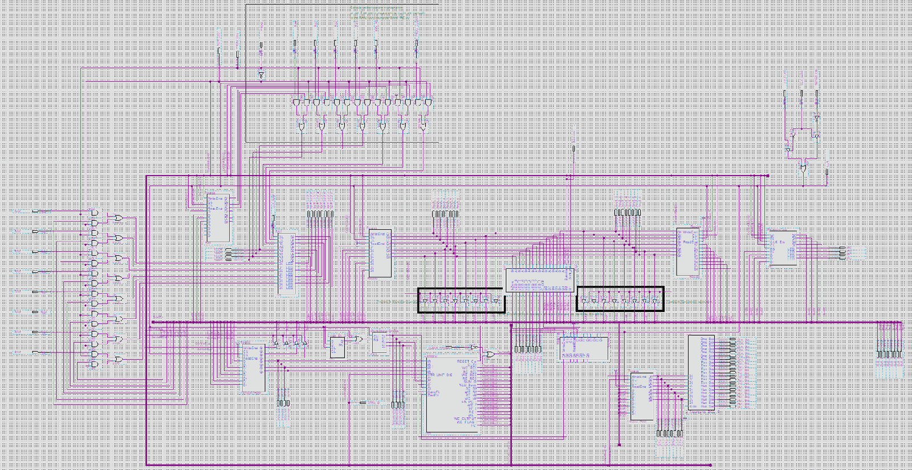
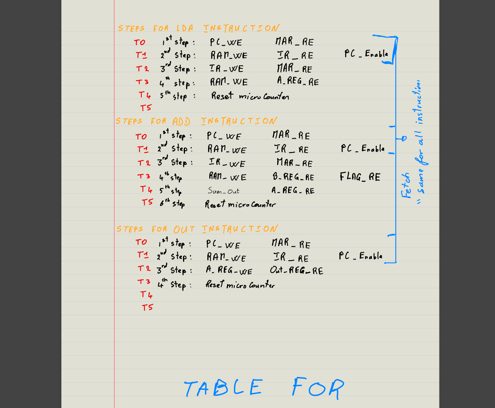
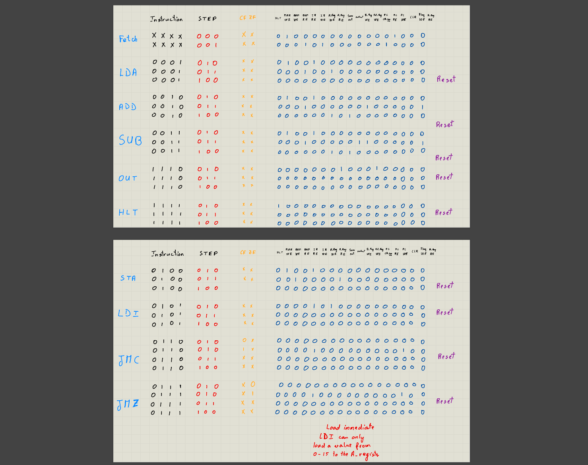
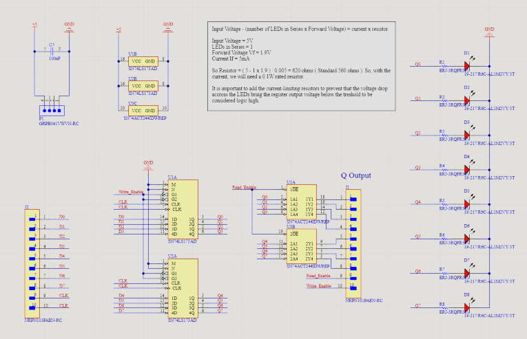
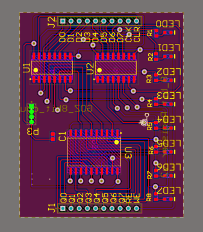
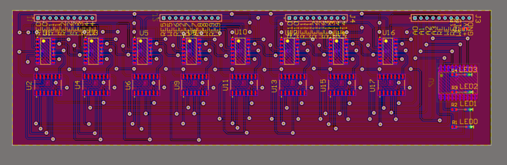
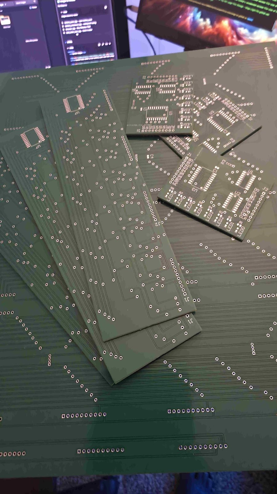

8-Bit CPU – FPGA (Quartus) & PCB Implementation
Overview
Designed and implemented a custom 8-bit CPU to understand processor architecture, instruction execution, and FSM-based control. Extended the design into a PCB-based implementation to explore real-world integration constraints beyond FPGA simulation.
What I Did
- Designed the datapath and control unit using block-diagram design in Intel Quartus.
- Implemented core components: program counter, registers, RAM, ALU, and control logic.
- Defined an instruction set (including addition/subtraction) and validated execution flow.
- Verified functionality using simulation, testbenches, and waveform analysis.
- Translated the digital CPU into a PCB-level architecture (power + routing considerations).
System Images







Results
- Successfully executed all implemented instructions on FPGA hardware.
- Achieved stable operation at ~15 kHz after resolving timing violations (FPGA).
- Successfully demonstrated CPU operation on a custom PCB.
- Gained hands-on experience with hardware bring-up, debugging, and FPGA vs PCB design tradeoffs.
- Strengthened understanding of computer architecture, FSM-based control, and debugging workflow.
Waveform + testbench verification of instruction execution